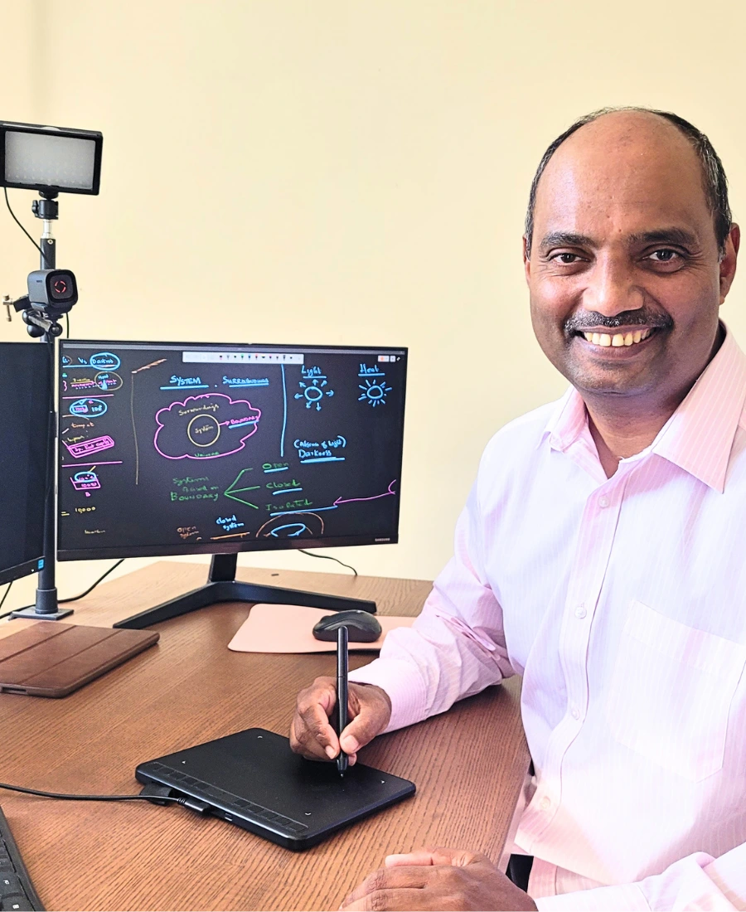

Subject knowledge
Knowing the subject deeply matters, but it is only the starting point.
About Jothi Learning
Jothi exists for families who want academic progress to feel less uncertain.
We combine clear teaching, regular checks, honest feedback, and the right study environment, so parents can see what is improving and what still needs work.
Who Jothi Is For
We work with parents whose child is putting in effort, but still lacks direction, consistency, or confidence.
The need may be stronger foundations, sharper exam method, or a clearer pathway through GCSEs and A-Levels.
Parents often come to us when
Your child works hard, but tests still expose gaps.
You want planned teaching, assessment, and feedback, not disconnected lessons.
You need help choosing the right route through key school years.
A structured system around the student.
We help students move from where they are now to a clearer academic destination, with teaching, testing, tracking, and support shaped around that goal.
Jothi Trifecta
Once the goal is clear, the strategy becomes clearer too: what to study, how to practise, where to stretch, and what to fix first.
Mindset and environment then support that journey, helping the student build the habits, confidence, and consistency needed to keep moving.
The destination shapes the strategy, mindset, and environment around the student.
4T Teaching Engine
We teach clearly, test understanding, track the evidence, and use what we learn to transform the next step.
That means lessons are not isolated events. Each one helps us decide what should happen next.
We teach for transformation.
The Trifecta gives the student direction; the 4T Engine keeps the programme moving towards transformation.
Tutor Quality and Development
Deep subject knowledge matters, but it is not the same as great teaching.
In practice, that means we teach the teachers: how to explain clearly, meet students at their level, use online tools well, and build confidence without lowering standards.
A tutor may know the content well and still struggle to explain it at the student’s level. Strong teaching requires patience, clarity, warmth, questioning, feedback, and the ability to meet a student where they are before lifting them higher.
Through a residency-style apprenticeship, often lasting up to six months, new tutors learn how to teach inside the Jothi system. They observe lessons, practise explanations, receive feedback, and learn how to use online tools appropriately so learning feels clear, focused, and visible.
Our training has also supported qualified teachers who wanted to strengthen their online teaching craft. The goal is not just subject confidence. The goal is a tutor who can connect with students, enjoy the act of teaching, and help them make measurable progress.
Knowing the subject deeply matters, but it is only the starting point.
Tutors practise explanation, questioning, correction, and feedback.
Technology should make learning clearer, not more distracting.
Great tutors meet students at their level before lifting them higher.

BSc Chemistry · Polymer Engineering · 20 years in industry · Jothi Learning established in 2020
Teaches Maths and Chemistry and shapes the academic structure behind every Jothi programme.
Founder
My Year 12 results were poor enough that I could not get into the college I wanted. That disappointment stayed with me. It made me decide that I wanted to earn back choice — the ability to choose my path rather than accept whatever was left.
When I began my BSc in Chemistry, one of the first things I did was buy a book on study techniques with my own pocket money. I applied those methods seriously: planning, revision strategy, focus, repetition, and better use of time.
That changed how I studied. I became more disciplined, more consistent, and more deliberate. Over time, I moved from being an average student to achieving the top spot in my college. Later, I went on to rank first in Polymer Engineering at Cochin University.
That experience shaped Jothi. I know that poor results do not have to define a student’s future. With hard work, determination, the right strategy, and a system that shows them what to do next, students can open doors that once felt closed.
Jothi exists to give students that path earlier — before disappointment turns into lost opportunity.
Purpose
Mission
Vision
Consultation
Start with a consultation so we can understand your child’s current level, academic goals, and the best starting point.